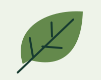

Original practice demonstrating an inline SVG, a linked SVG, and a shifted viewBox. The internal coordinates stay independent of the displayed image size.
Inline: CSS styles the circle. Geometry uses SVG coordinates.

Linked image: reusable and cacheable; the host page cannot select its internal paths with CSS.A smaller viewBox magnifies the visible region. Its first two values move the origin.
SVG is suitable for icons and diagrams. Photographs generally belong in raster formats such as JPEG, WebP or AVIF.